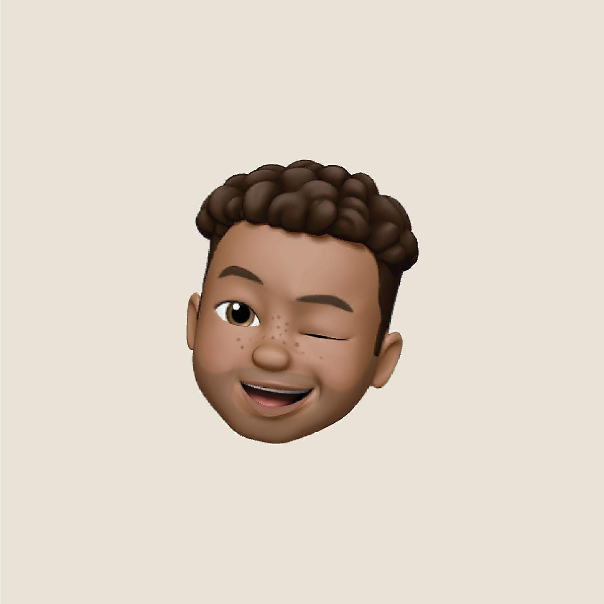

Welcome to YoungBlackPsych where we explore topics on happiness, creativity and the human condition.
Working collaboratively with black minds to improve access to Psychology & Mental Health.
Follow us on Social Media
Instagram Twitter YouTubeAccess our full site and recommended resources
LinktreeSubscribe to our weekly podcast
YouThinkYouKnow Promoting Mental Health Awareness one day at a time.